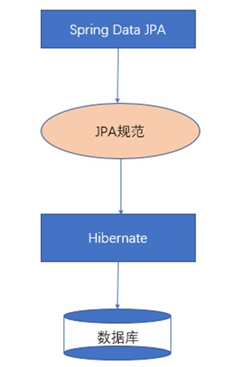

Spring Data JPA分别使用接口中方法，JPQL，原生SQL和根据方法命名规则的方法实现基本的CRUD操作
主要内容
1. 依赖导入
2. Spring配置文件编写
3. 数据表映射的实体类
4. 持久层接口的编写
Spring Data JPA与JPA,hibernate之间的关系

依赖
- IOC
- AOP
- Spring Data JPA
- el
- ORM
- ORM依赖tx jar包，事务相关依赖可能存在jar包冲突
- hibernate
- log4j
- mysql驱动
- c3p0
- test
1
2
3
4
5
6
7
8
9
10
11
12
13
14
15
16
17
18
19
20
21
22
23
24
25
26
27
28
29
30
31
32
33
34
35
36
37
38
39
40
41
42
43
44
45
46
47
48
49
50
51
52
53
54
55
56
57
58
59
60
61
62
63
64
65
66
67
68
69
70
71
72
73
74
75
76
77
78
79
80
81
82
83
84
85
86
87
88
89
90
91
92
93
94
95
96
97
98
99
100
101
102
103
104
105
106
107
108
109
110
111
112
113
114
115
116
117
118
119
120
121
122
123
124
125
126<properties>
<spring.version>5.0.2.RELEASE</spring.version>
<mysql.version>5.1.6</mysql.version>
<hibernate.version>5.0.7.Final</hibernate.version>
<slf4j.version>1.6.6</slf4j.version>
<log4j.version>1.2.12</log4j.version>
</properties>
<dependencies>
<!-- IOC -->
<dependency>
<groupId>org.springframework</groupId>
<artifactId>spring-context</artifactId>
<version>${spring.version}</version>
</dependency>
<dependency>
<groupId>org.springframework</groupId>
<artifactId>spring-context-support</artifactId>
<version>${spring.version}</version>
</dependency>
<dependency>
<groupId>org.springframework</groupId>
<artifactId>spring-beans</artifactId>
<version>${spring.version}</version>
</dependency>
<dependency>
<groupId>org.springframework</groupId>
<artifactId>spring-core</artifactId>
<version>${spring.version}</version>
</dependency>
<!-- AOP -->
<dependency>
<groupId>org.springframework</groupId>
<artifactId>spring-aop</artifactId>
<version>${spring.version}</version>
</dependency>
<dependency>
<groupId>org.aspectj</groupId>
<artifactId>aspectjweaver</artifactId>
<version>1.6.8</version>
</dependency>
<!-- spring data jpa -->
<dependency>
<groupId>org.springframework.data</groupId>
<artifactId>spring-data-jpa</artifactId>
<version>1.9.0.RELEASE</version>
</dependency>
<!-- spring data jpa el -->
<dependency>
<groupId>javax.el</groupId>
<artifactId>javax.el-api</artifactId>
<version>2.2.4</version>
</dependency>
<dependency>
<groupId>org.glassfish.web</groupId>
<artifactId>javax.el</artifactId>
<version>2.2.4</version>
</dependency>
<!-- ORM -->
<dependency>
<groupId>org.springframework</groupId>
<artifactId>spring-orm</artifactId>
<version>${spring.version}</version>
</dependency>
<dependency>
<groupId>org.springframework</groupId>
<artifactId>spring-tx</artifactId>
<version>${spring.version}</version>
</dependency>
<!-- hibernate -->
<dependency>
<groupId>org.hibernate</groupId>
<artifactId>hibernate-core</artifactId>
<version>${hibernate.version}</version>
</dependency>
<dependency>
<groupId>org.hibernate</groupId>
<artifactId>hibernate-entitymanager</artifactId>
<version>${hibernate.version}</version>
</dependency>
<dependency>
<groupId>org.hibernate</groupId>
<artifactId>hibernate-validator</artifactId>
<version>5.2.1.Final</version>
</dependency>
<!-- test -->
<dependency>
<groupId>org.springframework</groupId>
<artifactId>spring-test</artifactId>
<version>${spring.version}</version>
</dependency>
<dependency>
<groupId>junit</groupId>
<artifactId>junit</artifactId>
<version>4.12</version>
<scope>test</scope>
</dependency>
<!-- mysql -->
<dependency>
<groupId>mysql</groupId>
<artifactId>mysql-connector-java</artifactId>
<version>${mysql.version}</version>
</dependency>
<!-- c3po -->
<dependency>
<groupId>c3p0</groupId>
<artifactId>c3p0</artifactId>
<version>0.9.1.2</version>
</dependency>
<!-- log -->
<dependency>
<groupId>log4j</groupId>
<artifactId>log4j</artifactId>
<version>${log4j.version}</version>
</dependency>
<dependency>
<groupId>org.slf4j</groupId>
<artifactId>slf4j-api</artifactId>
<version>${slf4j.version}</version>
</dependency>
<dependency>
<groupId>org.slf4j</groupId>
<artifactId>slf4j-log4j12</artifactId>
<version>${slf4j.version}</version>
</dependency>
</dependencies>
Spring整合Spring Data JPA配置
- applicationContext.xml
1
2
3
4
5
6
7
8
9
10
11
12
13
14
15
16
17
18
19
20
21
22
23
24
25
26
27
28
29
30
31
32
33
34
35
36
37
38
39
40
41
42
43
44
45
46
47
48
49
50
51
52
53
54
55
56
57
58
59
60
61
62
63
64
65
66
67
68
69
70
71
72
73
74
75
76
77
78
79
80
81
82
83
84
85
86
<beans xmlns="http://www.springframework.org/schema/beans"
xmlns:xsi="http://www.w3.org/2001/XMLSchema-instance" xmlns:aop="http://www.springframework.org/schema/aop"
xmlns:context="http://www.springframework.org/schema/context"
xmlns:jdbc="http://www.springframework.org/schema/jdbc" xmlns:tx="http://www.springframework.org/schema/tx"
xmlns:jpa="http://www.springframework.org/schema/data/jpa" xmlns:task="http://www.springframework.org/schema/task"
xsi:schemaLocation="
http://www.springframework.org/schema/beans http://www.springframework.org/schema/beans/spring-beans.xsd
http://www.springframework.org/schema/aop http://www.springframework.org/schema/aop/spring-aop.xsd
http://www.springframework.org/schema/context http://www.springframework.org/schema/context/spring-context.xsd
http://www.springframework.org/schema/jdbc http://www.springframework.org/schema/jdbc/spring-jdbc.xsd
http://www.springframework.org/schema/tx http://www.springframework.org/schema/tx/spring-tx.xsd
http://www.springframework.org/schema/data/jpa
http://www.springframework.org/schema/data/jpa/spring-jpa.xsd">
<!-- 实体管理器 -->
<bean id="entityManagerFactory" class="org.springframework.orm.jpa.LocalContainerEntityManagerFactoryBean">
<!-- 数据源 -->
<property name="dataSource" ref="dataSource"></property>
<!-- 扫描的包 -->
<property name="packagesToScan" value="cn.itcast.domain"></property>
<!-- JPA实现方式 -->
<property name="persistenceProvider">
<bean class="org.hibernate.jpa.HibernatePersistenceProvider"></bean>
</property>
<!-- JPA供应商适配器 -->
<property name="jpaVendorAdapter">
<bean class="org.springframework.orm.jpa.vendor.HibernateJpaVendorAdapter">
<!-- 数据库类型 -->
<property name="database" value="MYSQL"></property>
<!-- 是否显示SQl语句 -->
<property name="showSql" value="true"></property>
<!-- 是否创建数据库表 -->
<property name="generateDdl" value="false"></property>
<!-- 数据库方言 -->
<property name="databasePlatform" value="org.hibernate.dialect.MySQLDialect"></property>
</bean>
</property>
<!-- 配置hibernate其他属性 -->
<property name="jpaProperties">
<props>
<prop key="hibernate.format_sql">true</prop>
</props>
</property>
</bean>
<bean id="dataSource" class="com.mchange.v2.c3p0.ComboPooledDataSource">
<property name="driverClass" value="com.mysql.jdbc.Driver"></property>
<property name="jdbcUrl" value="jdbc:mysql://localhost:3306/jpa"></property>
<property name="user" value="root"></property>
<property name="password" value="root"></property>
</bean>
<!-- 事物管理器 -->
<bean id="transactionManager" class="org.springframework.orm.jpa.JpaTransactionManager">
<property name="entityManagerFactory" ref="entityManagerFactory"></property>
</bean>
<!-- 整合Spring Data Jpa -->
<jpa:repositories base-package="cn.itcast.dao" entity-manager-factory-ref="entityManagerFactory"
transaction-manager-ref="transactionManager"></jpa:repositories>
<!-- 事务通知 -->
<tx:advice id="txAdvice" transaction-manager="transactionManager">
<tx:attributes>
<tx:method name="save*" propagation="REQUIRED"/>
<tx:method name="insert*" propagation="REQUIRED"/>
<tx:method name="update*" propagation="REQUIRED"/>
<tx:method name="delete*" propagation="REQUIRED"/>
<tx:method name="get*" read-only="true"/>
<tx:method name="find*" read-only="true"/>
<tx:method name="*" propagation="REQUIRED"/>
</tx:attributes>
</tx:advice>
<!-- AOP -->
<aop:config>
<aop:pointcut id="pt1" expression="execution(* cn.itcast.service.impl.*.*(..))"></aop:pointcut>
<aop:advisor advice-ref="txAdvice" pointcut-ref="pt1"></aop:advisor>
</aop:config>
<!-- 扫描的包 -->
<context:component-scan base-package="cn.itcast"></context:component-scan>
</beans>实体类
1
2
3
4
5
6
7
8
9
10
11
12
13
14
15
16
17
18
19
20
21
22
(name = "cst_customer")
public class Customer {
(strategy = GenerationType.IDENTITY)
(name = "cust_id")
private Long custId;
(name = "cust_name")
private String custName;
(name = "cust_source")
private String custSource;
(name = "cust_industry")
private String custIndustry;
(name = "cust_level")
private String custLevel;
(name = "cust_address")
private String custAddress;
(name = "cust_phone")
private String custPhone;
//省略get,set方法
}dao层接口
1
2public interface CustomerDao extends JpaRepository<Customer,Long>,JpaSpecificationExecutor<Customer> {
}基本CRUD
findOne(id)：根据id进行查询save(Object)：保存或者更新- 对象无
id属性：保存 - 对象有id属性：首先进行一次查询
- 有值：进行更新
- 无值：添加
- 对象无
delete(id)：根据id删除findAll()：查询全部
复杂查询
通过接口中已定义方法
getOne(id)：查询（延迟加载）count()exists()
JPQL语句
查询
1
2(value = "from Customer where custName = ?")
public Customer findByName(String custName);多占位符时变量的赋值
参数顺序与占位符顺序保持一致
1
2(value = "from Customer where custName = ? and custId = ?")
public Customer findByNameAndId(Long custName,String custId);占位符后添加索引
1
2(value = "from Customer where custName = ?2 and custId = ?1")
public Customer findByNameAndId(Long custId,String custName);使用注解
1
2(value = "from Customer where custName = :custName and custId = :custId")
public Customer findByNameAndId(@Param("custId")Long custId,@Param("custName")String custName);
添加
需要使用注解
@Modifying需要事务支持
需设置不自动回滚
1
2
3
4
5
6
7
8
9
10(value = "update Customer set custName = ? where custId = ?")
public void update( String custName, Long custId);
(value = false)
public void testJpqlUpdate(){
customerDao.update("测试数据4",2L);
}
删除
对比添加时，注解，事务，回滚可写可不写
1
2(value = "delete from Customer where custId = ?")
public void delete(String custId);
原生SQL语句
@Query注解nativeQuery属性设置为true
查询
1
2
3
4
5(value = "select * from cst_customer",nativeQuery = true)
public List<Customer> findBySql();
(value = "select * from cst_customer where cust_name like ?",nativeQuery = true)
public List<Object[]> findBySqlWithName(String custName);更新
事务支持
设置不自动回滚
1
2
3
4
5
6
7
8
9(value = "select * from cst_customer",nativeQuery = true)
public List<Customer> findBySql();
(value = "select * from cst_customer where cust_name like ?",nativeQuery = true)
public List<Object[]> findBySqlWithName(String custName);
(value = "update cst_customer set cust_name = ? where cust_id = ?",nativeQuery = true)
public void updateCustomer( String custName, Long custId);
方法名称规则查询
- findBy + 属性名
- 运行期解析：findBy –> from 实体类；属性名 –> where 属性 = ?
- findBy + 属性名 +查询方式（Like | IsNull）
- 命名规则表
| Keyword | Sample | JPQL |
|---|---|---|
| And | findByLastnameAndFirstname | … where x.lastname = ?1 and x.firstname = ?2 |
| Or | findByLastnameOrFirstname | … where x.lastname = ?1 or x.firstname = ?2 |
| Is,Equals | findByFirstnameIs, findByFirstnameEquals | … where x.firstname = ?1 |
| Between | findByStartDateBetween | … where x.startDate between ?1 and ?2 |
| LessThan | findByAgeLessThan | … where x.age < ?1 |
| LessThanEqual | findByAgeLessThanEqual | … where x.age ⇐ ?1 |
| GreaterThan | findByAgeGreaterThan | … where x.age > ?1 |
| GreaterThanEqual | findByAgeGreaterThanEqual | … where x.age >= ?1 |
| After | findByStartDateAfter | … where x.startDate > ?1 |
| Before | findByStartDateBefore | … where x.startDate < ?1 |
| IsNull | findByAgeIsNull | … where x.age is null |
| IsNotNull,NotNull | findByAge(Is)NotNull | … where x.age not null |
| Like | findByFirstnameLike | … where x.firstname like ?1 |
| NotLike | findByFirstnameNotLike | … where x.firstname not like ?1 |
| StartingWith | findByFirstnameStartingWith | … where x.firstname like ?1 (parameter bound with appended %) |
| EndingWith | findByFirstnameEndingWith | … where x.firstname like ?1 (parameter bound with prepended %) |
| Containing | findByFirstnameContaining | … where x.firstname like ?1 (parameter bound wrapped in %) |
| OrderBy | findByAgeOrderByLastnameDesc | … where x.age = ?1 order by x.lastname desc |
| Not | findByLastnameNot | … where x.lastname <> ?1 |
| In | findByAgeIn(Collection ages) | … where x.age in ?1 |
| NotIn | findByAgeNotIn(Collection age) | … where x.age not in ?1 |
| TRUE | findByActiveTrue() | … where x.active = true |
| FALSE | findByActiveFalse() | … where x.active = false |
| IgnoreCase | findByFirstnameIgnoreCase | … where UPPER(x.firstame) = UPPER(?1) |
实现过程
- Dao接口继承
JpaRepository和JpaSpecificationExecutor - 自动注入时注入的customerDao对象，本质上是通过
JdkDynamicAopProxy生成的一个代理对象 JdkDynamicAopProxy的invoke方法，生成的代理对象为SimpleJpaRepositorySimpleJpaRepository中findOne–>EntityManager的find方法，即标准JPA操作